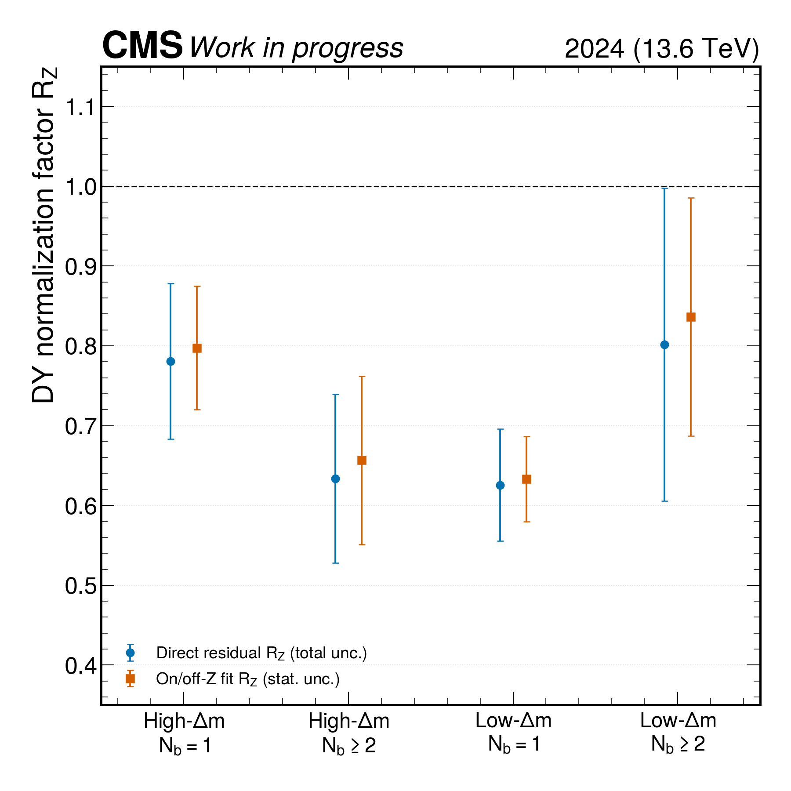
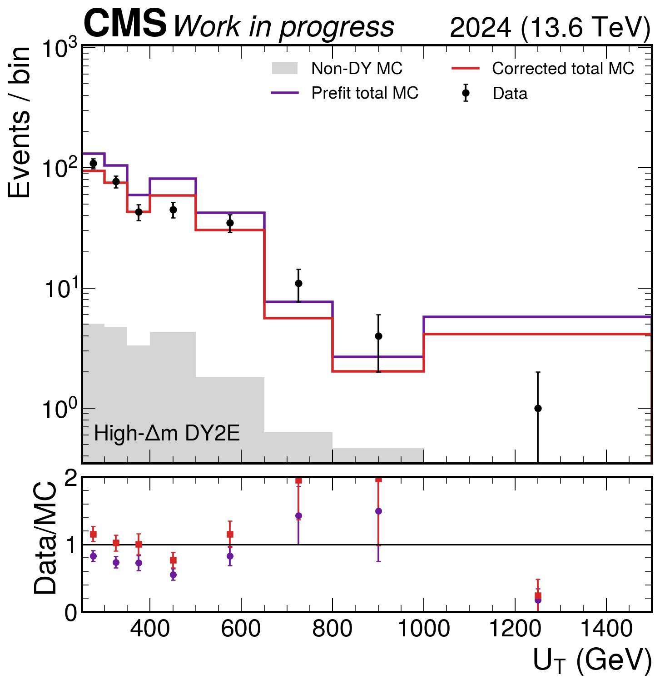
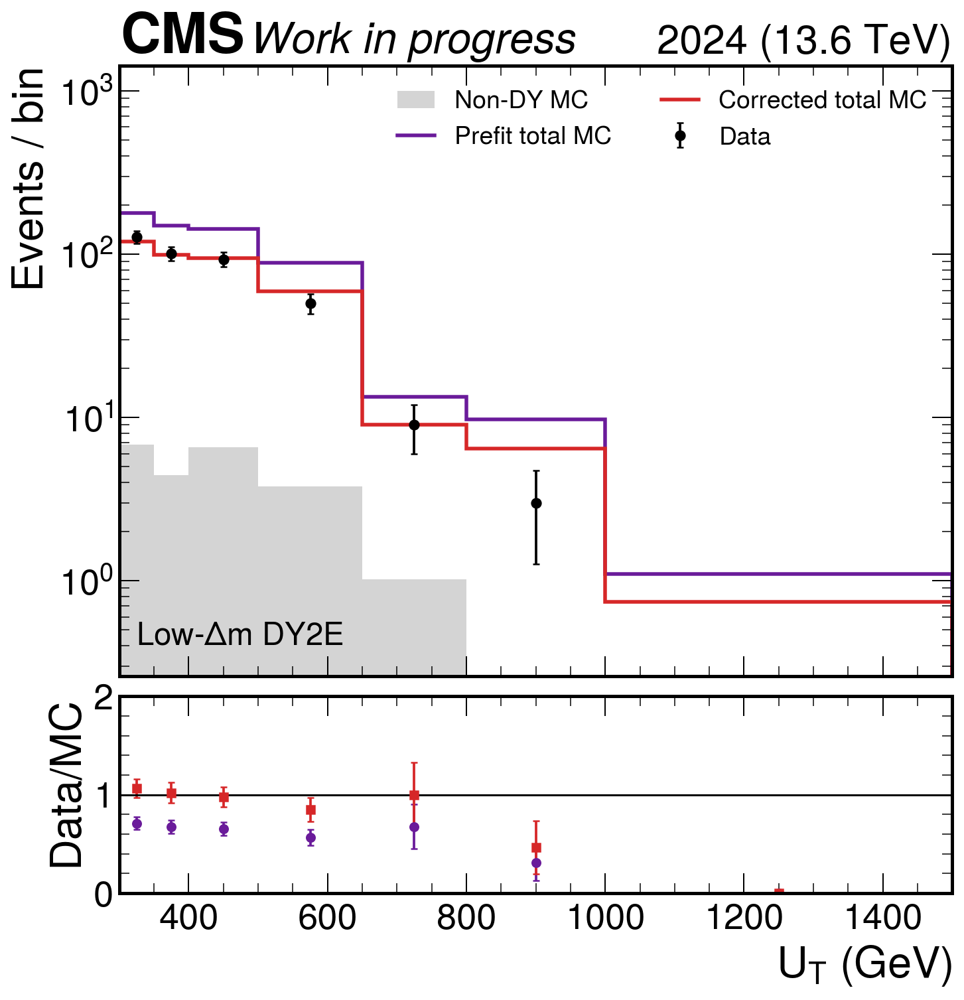
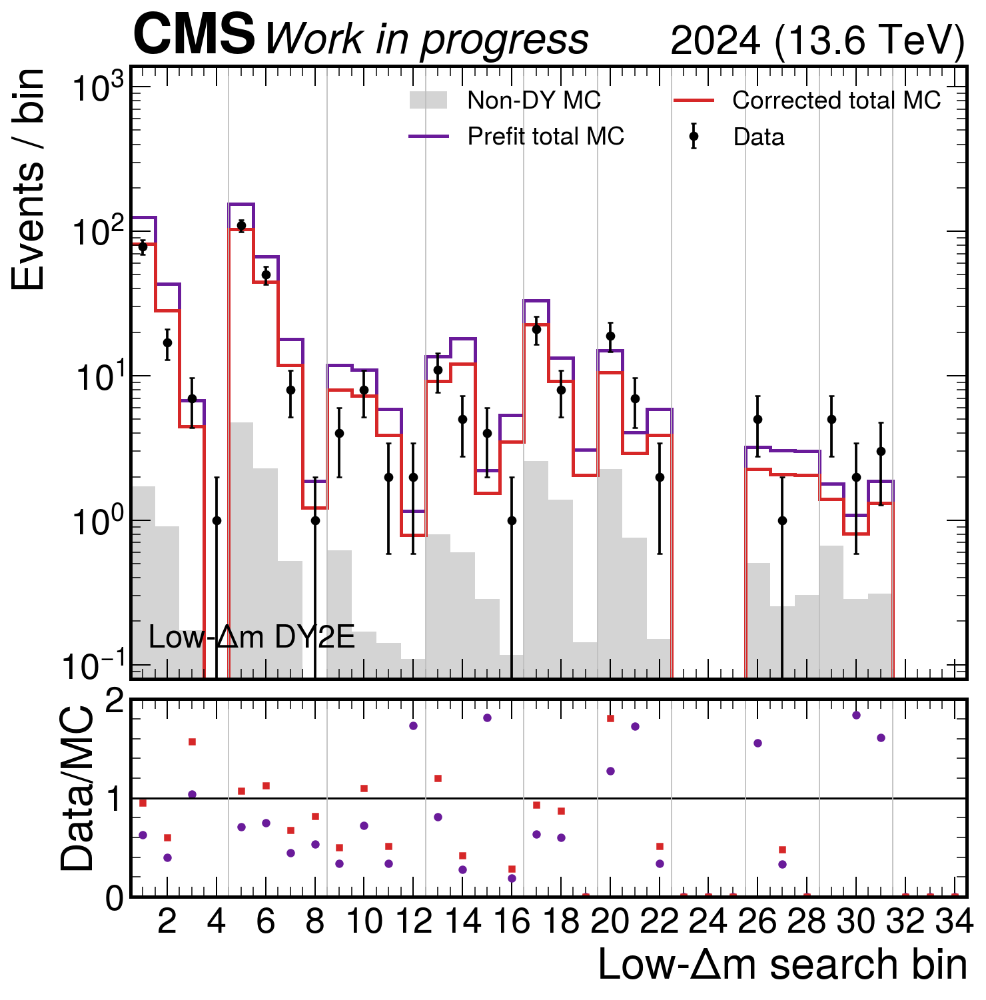
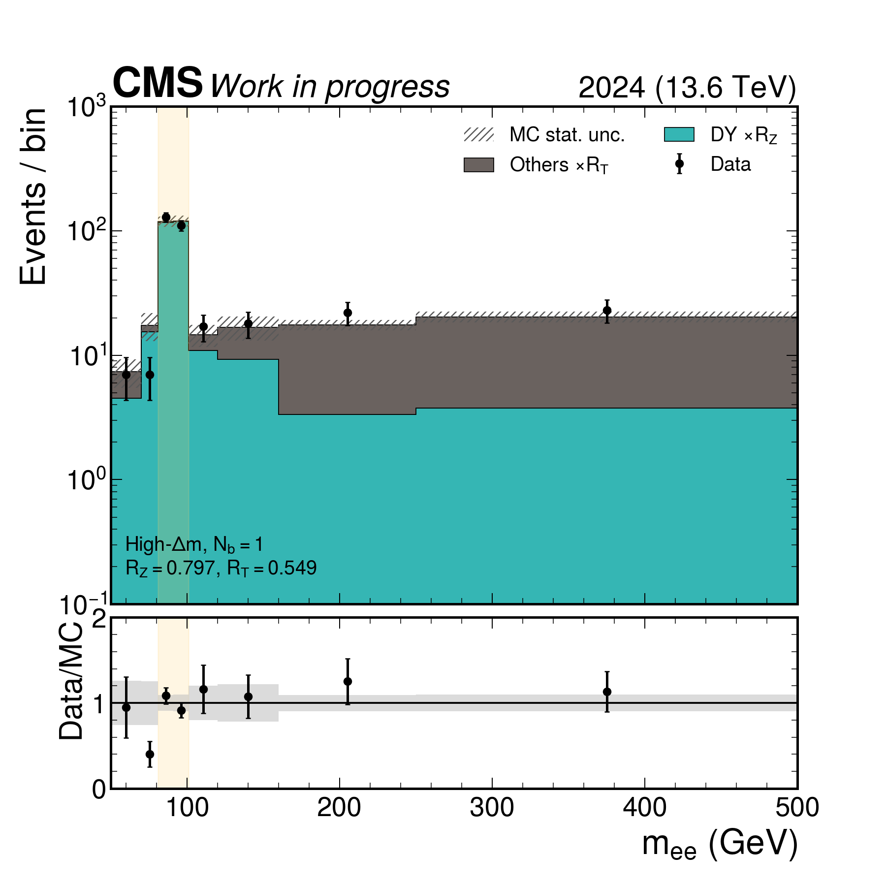
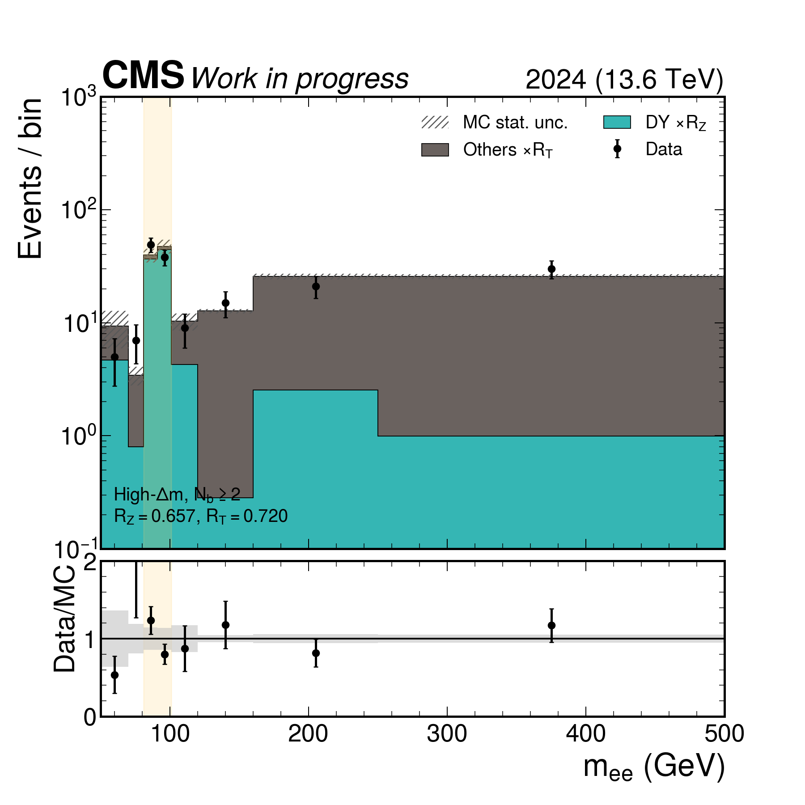
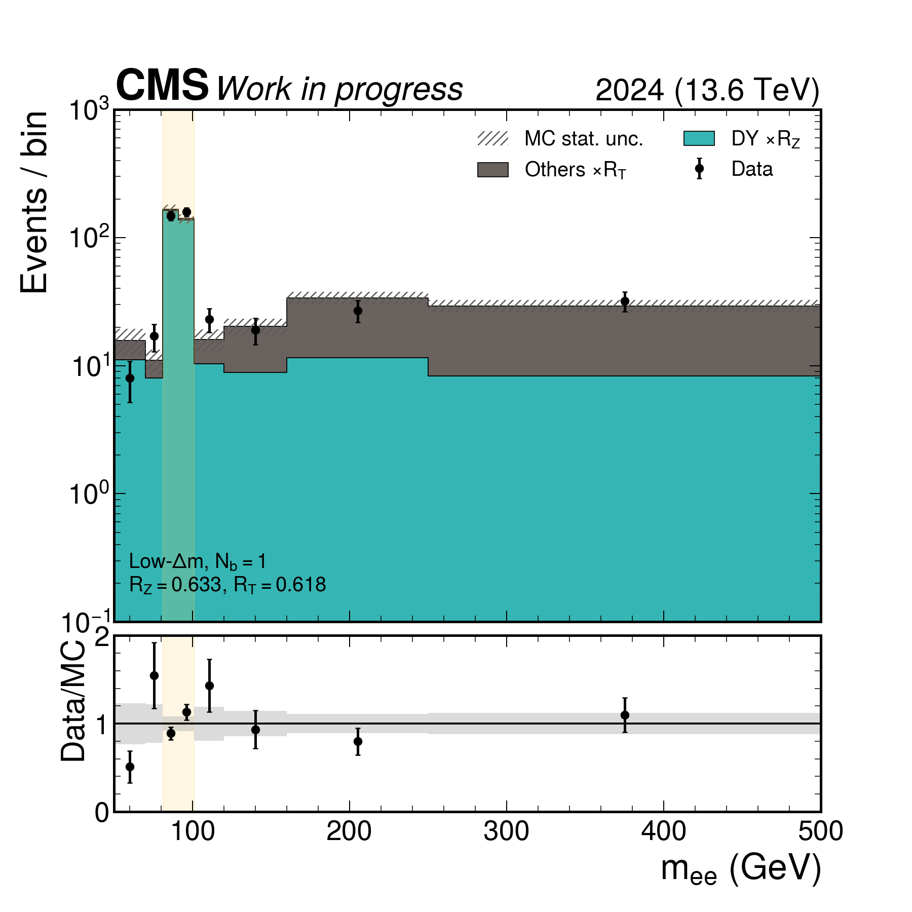
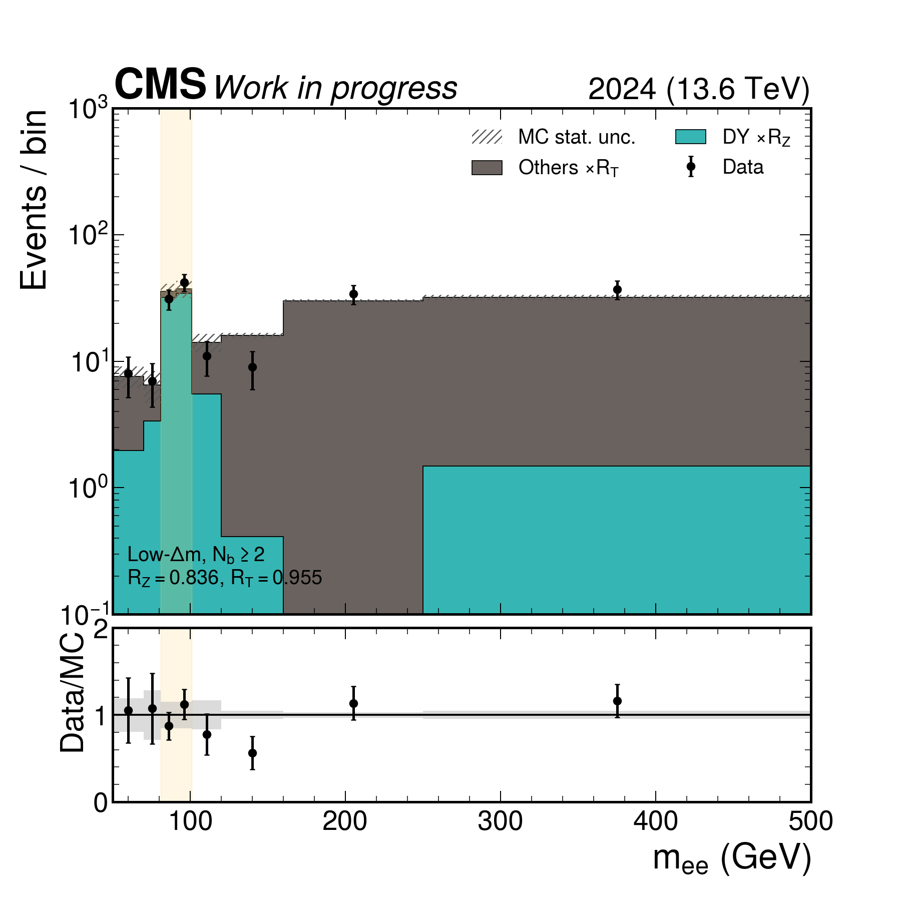

DY2E normalization factors
Direct background-subtracted factors and the simultaneous on/off-Z solution agree within their uncertainties in every category.
PDFCMS Run 3 · all-hadronic stop search
Background-subtracted DY normalization and shape diagnostics using the new DYto2E-4Jets inclusive sample with the measured 2024 b-tag scale factors. These are prefit control-region results.
Preliminary · DY2E validatedThe prefit DY prediction is high: the inclusive data/MC values are 0.747 in High-Δm and 0.665 in Low-Δm. After subtracting non-DY MC, the measured DY scale factors are 0.735 ± 0.077 and 0.651 ± 0.059, respectively.
The normalization correction materially improves the UT shape agreement. It is not a postfit result. Fine search-bin closure also improves, from χ²/ndof = 1.98 to 1.35, but sparse bins remain statistically unstable and should not drive a stronger claim.
The direct residual method fixes non-DY MC to its nominal prediction. The on/off-Z matrix method simultaneously solves for DY normalization RZ and an effective non-DY normalization RT. Their RZ results agree within uncertainties.
| Category | Prefit data/MC | Direct RZ (total) | Matrix RZ (stat.) | Matrix RT (stat.) |
|---|---|---|---|---|
| High-Δm, Nb = 1 | 0.789 | 0.781 ± 0.097 | 0.797 ± 0.077 | 0.549 ± 0.155 |
| High-Δm, Nb ≥ 2 | 0.659 | 0.634 ± 0.106 | 0.657 ± 0.105 | 0.720 ± 0.105 |
| Low-Δm, Nb = 1 | 0.636 | 0.626 ± 0.070 | 0.633 ± 0.054 | 0.618 ± 0.135 |
| Low-Δm, Nb ≥ 2 | 0.823 | 0.802 ± 0.196 | 0.836 ± 0.149 | 0.955 ± 0.116 |

Direct background-subtracted factors and the simultaneous on/off-Z solution agree within their uncertainties in every category.
PDF
The DY-only correction lowers the prefit prediction. The UT goodness-of-fit improves from χ²/ndof = 2.52 to 1.09.
PDF
The low-Δm UT agreement improves from χ²/ndof = 4.76 to 0.57. The last populated bins remain statistically limited.
PDF
Across 34 bins the correction improves χ²/ndof from 1.98 to 1.35. Individual sparse bins can still fluctuate strongly.
PDF
DY is scaled by the measured RZ and drawn at the bottom; Others is scaled by RT and stacked above it.
PDF

The Z window is shown explicitly with the matrix-extracted normalizations applied.
PDF
This is the statistically weakest DY2E b-tag category and retains the largest RZ uncertainty.
PDFDY MC is the new DYto2E-4Jets_Bin-MLL-50 inclusive sample. No legacy DY pTll-binned dataset is included. Non-DY contamination is taken from the normalized 2024 MC components, with b-tag, pileup, electron trigger, and electron identification variations propagated to the direct factor.
Same-region corrected plots are goodness-of-fit diagnostics, not independent closure tests. The page therefore reports both the prefit and corrected distributions and does not claim a blinded-SR validation.